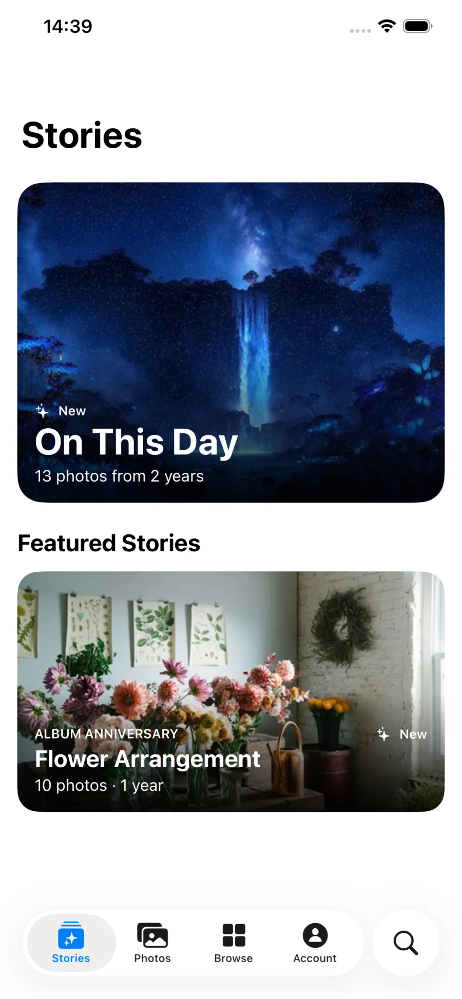

Browse
Browse your stories.
Quickly navigate through your stories and find the moments you want to relive.
Stories for Synology Photos
Rediscover moments with the kind of automatic memory highlights you know from modern photo apps: On This Day, Starring [Person], album anniversaries, and more, all from your own Synology NAS.

Inside the app
Move from your albums to a beautifully presented Story in a tap. The interface stays familiar, focused, and built around your photos.
Quickly navigate through your stories and find the moments you want to relive.
Stories play full screen with just enough context to bring the moment back.
Revisit photos captured on today’s date in years past and see how those moments have changed over time.
Rediscover memories featuring someone you care about, using the people already recognized by Synology Photos.
Return to memorable trips, celebrations, and events when their anniversaries come around.
Designed for privacy
Connection details are kept on your device, sensitive credentials are protected by the iOS Keychain, and the app contains no third-party advertising or analytics SDKs.